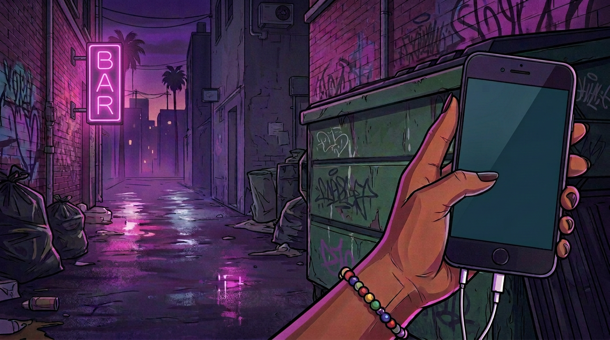
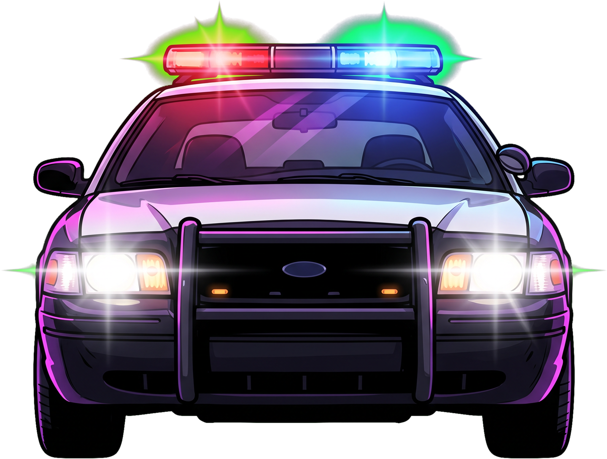
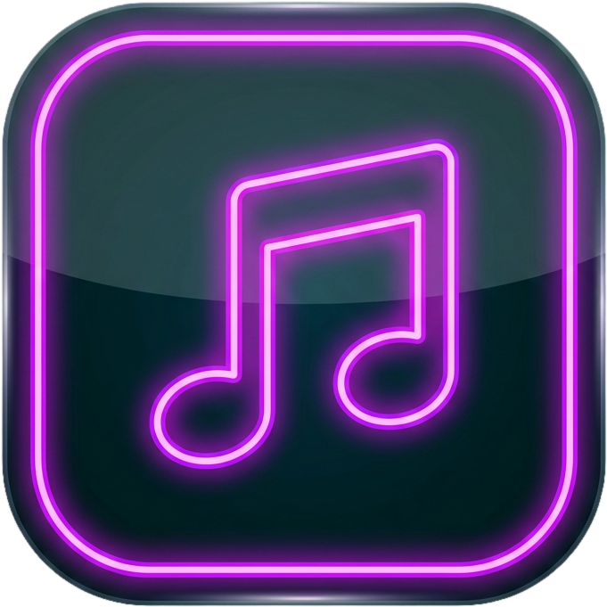
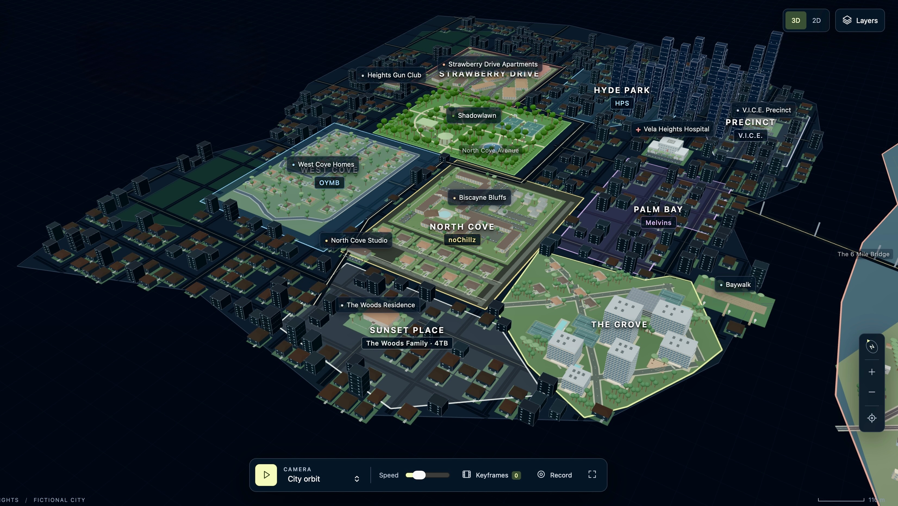
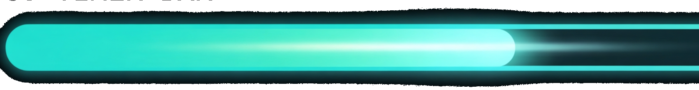

9:41
▓▓▓▓
Apps

Music

Map
🚗
Uber
✕
Now Playing
✕
📍 MIAMI — CURRENT LOCATION
✕
💰 Earn $500 to unlock Uber to next map
🗑️ SEARCH THE TRASH
Find the key — find the gun for a bonus
10
SEC

↻
ROTATE YOUR PHONE
Landscape mode required